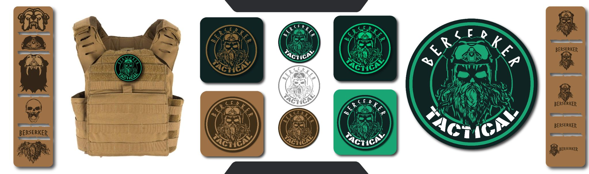

SISTEMAS VISUALES · MARCAS
Identidad corporativa
Ideas distintas, un lenguaje visual propio.
Ver proyectosEL LENGUAJE DE UNA MARCA
Ideas que se vuelven reconocibles.
Explora identidades creadas para proyectos de distintos mundos. Cada marca parte de una intención y encuentra su forma en el símbolo, el color, la tipografía y sus aplicaciones.
SELECCIÓN DE PROYECTOS